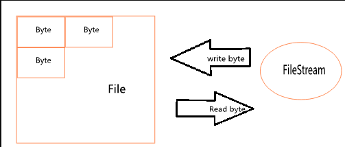
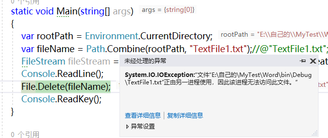
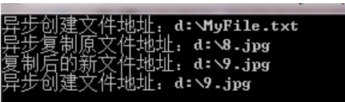

一、如何理解FIleStream
通过前3章的学些，相信大家对于Stream已经有一定的了解，但是又如何去理解FileStream呢？请看下图：

我们磁盘中的任何文件都是通过二进制数组组成，最为直观的就是记事本了，当我们新建一个记事本时，它的大小时0KB，我们每次输入一个数字或字母时，文件便会自动增大到4KB，可见，随着我们输入的内容越来越多，文件也会越来越大，同理，当我们删除文件内容时，文件也会相应的减小，对了，聪明的你肯定会问：谁将内容以怎样的形式放到文件中去了？
好问题，还记得第一章流的概念嘛？对了，真实世界的一群鱼可以通过河流往前往各个地方，FileStream也一样，byte可以通过FileStream进行传输，这样我们便能在计算机上对任何文件进行一系列操作了。
二、FileStream的重要性
FileStream顾名思义文件流，我们电脑上的文件都可以通过文件流进行操作，例如文件的复制、简介、粘贴、删除、本地文件上传、下载、等许多重要的功能都离不开文件流。所以文件流不仅在本机上非常重要，在如今的网络世界上也万万不能缺少的，想象一下我们开启虚拟机后，直接从本地复制一个文件到虚拟机上，时多么的方便，如果没有文件流，这个将难以想象。（大家别误解，文件流通过网络流将客户都安上传的文件传到服务器端接收，然后通过文件流进行处理，下载正好相反）
三、FileStream常用构造函数介绍
1、FileStream(SafeFileHandle safeFileHandle,FileAccess fileAccess)
非托管参数SafeFileHandle简单介绍
SafeFileHandle：是一个文件安全句柄，这样的解释可能大家一头雾水，别急，大家先不要去理睬这深邃的含义，只要知道这个类型是C#非托管资源，也就是说它能够调用非托管资源的方法，而且不属于C#回收机制，所以我们必须使用GC手动或其他方式（Finalize或Dispose方法）进行非托管资源的回收，所以SafeFileHandle是一个默默无闻的保镖，一直暗中保护FileStream和文件的安全，为了让大家更好的理解这个保镖，请看第一段代码：
1 static void Main(string[] args)
2 {
3 var rootPath = Environment.CurrentDirectory;
4 var fileName = Path.Combine(rootPath, "TextFile1.txt");//@"TextFile1.txt";
5 FileStream fileStream = new FileStream(fileName, FileMode.OpenOrCreate);
6 Console.ReadLine();
7 File.Delete(fileName);
8 Console.ReadKey();
9 }我们运行一下，结果报错了，我看看一下错误：

为什么会报错呢？其实程序被卡在了Console.ReadLine()这里，FileStream并没有被释放，系统不知道这个文件是否还有用，所以帮我们保护这个文件（那个非托管资源SafeFileHandle所使用的内存还被占用着）所以SafeFileHandle在内部保护了这个文件从而报出了这个异常，如果我们将流关闭后，这个问题就不存在了。
所以，我们又回到了一个老问题上面，我们每次使用完FileStream后都必须将他关闭并释放资源。
2、FileStream(string str,FileModel model)
string 参数表示文件所在的地址，FileMode是个枚举，表示确定如何打开或创建文件 。
FileModel枚举参数包含以下内容：
|
成员名称 |
说明 |
|
Append |
打开现有文件并查找到文件尾，或创建新文件。FileMode.Append 只能同 FileAccess.Write 一起使用。 |
|
Create |
指定操作系统应创建新文件。如果文件已存在，它将被改写。这要求 FileIOPermissionAccess.Write。 System.IO.FileMode.Create 等效于这样的请求：如果文件不存在，则使用 CreateNew；否则使用 Truncate。 |
|
CreateNew |
指定操作系统应创建新文件。此操作需要 FileIOPermissionAccess.Write。如果文件已存在，则将引发 IOException。 |
|
Open |
指定操作系统应打开现有文件。打开文件的能力取决于 FileAccess 所指定的值。如果该文件不存在， 则引发 System.IO.FileNotFoundException。 |
|
OpenOrCreate |
指定操作系统应打开文件（如果文件存在）；否则，应创建新文件。如果用 FileAccess.Read 打开文件，则需要 FileIOPermissionAccess.Read。如果文件访问为 FileAccess.Write 或 FileAccess.ReadWrite，则需要 FileIOPermissionAccess.Write。如果文件访问为 FileAccess.Append，则需要 FileIOPermissionAccess.Append。 |
|
Truncate |
指定操作系统应打开现有文件。文件一旦打开，就将被截断为零字节大小。此操作需要 FileIOPermissionAccess.Write。 试图从使用 Truncate 打开的文件中进行读取将导致异常。 |
3、FileStream(IntPtr intPtr,FIleAccess fileAccess,Boolean ownsHandle)
FileAccess参数也是一个枚举，表示对该文件的操作权限：
参数ownsHandle：也就是类似于前面和大家介绍的SafeFileHandler，有2点必须注意：（1）对于指定的文件句柄，操作系统不允许所请求的access，例如：当access为Write或ReadWrite而文件句柄设置为只读访问的时候，会出现异常。所以ownsHandle才是老大，FileAccess的权限应该在ownsHandle的范围内。（2）FileStream假定它的句柄有独占控制权，当FileStream也持有句柄时，读取、写入或查找可能会导致数据破坏，为了数据安全，请使用句柄前调用Flush，并避免在使用完句柄后调用Close以外的任何方法。
4、FileStream(string str,FileModel model,FileAccess,fileAccess,FileShare fileShare)
FileShare：同样时一个枚举类型，确定文件如何由进程共享。
|
Delete |
允许随后删除文件。 |
|
Inheritable |
使文件句柄可由子进程继承。Win32 不直接支持此功能。 |
|
None |
谢绝共享当前文件。文件关闭前，打开该文件的任何请求（由此进程或另一进程发出的请求）都将失败。 |
|
Read |
允许随后打开文件读取。如果未指定此标志，则文件关闭前，任何打开该文件以进行读取的请求（由此进程或另一进程发出的请求）都将失败。但是，即使指定了此标志，仍可能需要附加权限才能够访问该文件。 |
|
ReadWrite |
允许随后打开文件读取或写入。如果未指定此标志，则文件关闭前，任何打开该文件以进行读取或写入的请求（由此进程或另一进程发出）都将失败。但是，即使指定了此标志，仍可能需要附加权限才能够访问该文件。 |
|
Write |
允许随后打开文件写入。如果未指定此标志，则文件关闭前，任何打开该文件以进行写入的请求（由此进程或另一进过程发出的请求）都将失败。但是，即使指定了此标志，仍可能需要附加权限才能够访问该文件。 |
5、FileStream(string str,FileMode mode,FileAccess fileAccess,FileShare fileShare,Int32 i,Boolean async)
Int32:这是一个缓冲区的大小，大家可以按照自己的需要定制；
Boolean async：是否异步读写，告诉FileStream示例，是否采用异步读写
6、FileStream(string str,FileMode mode,FileShare fileShare,Int32 i,FileOption fileOption)
FileOption:这是类似于FileStream对于我呢见操作的高级选项
四、FileStream常用属性介绍
1、CanRead：指示FileStream是否可以读操作
2、CanSeek：指示FileStream是否可以跟踪查找流操作
3、IsAsync：FileStream是否同步工作还是异步工作
4、Name：FileStream的名字，只读属性
5、ReadTimeout：设置读取超时时间
6、SafeFileHandle：文件安全句柄，只读属性
7、Position：当前FileStream所在的流的位置
五、FileStream常用方法介绍
以下方法重写了Stream的一些虚方法
1、IAsyncResult BeginRead 异步读取
2、IAsyncResult BeginWrite 异步写
3、void Close 关闭当前FileStream
4、void EndRead 异步读取结束
5、void EndWrite 异步写结束
6、void Flush 立刻释放缓冲区，将数据全部导出到基础流（文件）中
7、int Read 一般读取
8、int ReadByte 读取单个字节
9、long Seek 跟踪查找流所在的位置
10、void SetLength 设置FileStream的长度
11、void Write 一般写
12、void WriteByte 写入单个字节
六、属于FileStream独有的方法
1、FileSecurity GetAccessControl()
这个不是很常用，FileSecurity时文件安全类，直接表达当前文件的访问控制列表（ACL）的复合当前文件权限的项目，ACL大家有个了解就行，以后会单独和大家讨论下ACL方面的知识
2、void Lock(long position,long length)
这个Lock方法和线程中的Lock关键字很不一样，它能够锁住文件中的某一部分，非常的强悍！用了这个方法我们能够精确锁定住我们要锁住的文件的部分内容
3、void SetAccessControl(FileSecurity fileSecurity)
和GetAccessControl很相似，ACL技术会再以后单独介绍
4、void Unlock(long position,long length)
正好和lock方法相反，对于文件部分的解锁
七、文件的新建和拷贝（主要演示文件同步和异步操作）
首先我们尝试DIY一个IFileCOnfig
1 public interface IFileConfig
2 {
3 string FileName { get; set; }
4 bool IsAsync { get; set; }
5 }创建文件配置类CreateFileConfig，用于添加文件一些配置设置，实现添加文件的操作
1 public class CreateFileConfig : IFileConfig
2 {
3 /// <summary>
4 /// 文件名称
5 /// </summary>
6 public string FileName { get; set; }
7 /// <summary>
8 /// 是否异步
9 /// </summary>
10 public bool IsAsync { get; set; }
11 /// <summary>
12 /// 创建文件所在Url
13 /// </summary>
14 public string CreateUrl { get; set; }
15 }让我们定义一个文件流测试类：FileStreamTest来实现文件的操作。
1 /// <summary>
2 /// 文件测试类
3 /// </summary>
4 public class FileStreamTest在该类中实现一个简单的Create方法，用来同步或异步的实现添加文件，FileStream会根据配置类去选择相应的构造函数，实现异步或同步的添加方式
1 /// <summary>
2 /// 添加文件方法
3 /// </summary>
4 /// <param name="config"></param>
5 public void Create(IFileConfig config)
6 {
7 lock (_lockObject)
8 {
9 //得到创建文件配置的对象
10 var createFileConfig = config as CreateFileConfig;
11 //假设创建完文件后写入一段话，实际项目中无需这么做，这里只是演示
12 char[] insertContent = "HellowWord".ToCharArray();
13 if (createFileConfig == null)
14 {
15 return;
16 }
17 //转化成byte[]
18 byte[] byteArrayContent = Encoding.Default.GetBytes(insertContent, 0, insertContent.Length);
19 //根据传入的配置文件来决定是否同步或者异步实例化Stream对象
20 FileStream stream = createFileConfig.IsAsync
21 ? new FileStream(createFileConfig.CreateUrl, FileMode.Create, FileAccess.ReadWrite, FileShare.None,
22 4096, true)
23 : new FileStream(createFileConfig.CreateUrl, FileMode.Create);
24 using (stream)
25 {
26 //如果不注释下面代码会抛出异常，google上提示是WriteTimeOut只支持网络流
27 //stream.WriteTimeout=READ_OR_WRITE_TIMEOUT;
28 //如果流是同步并且可写
29 if (!stream.IsAsync && stream.CanWrite)
30 {
31 stream.Write(byteArrayContent, 0, byteArrayContent.Length);
32 }
33 else if (stream.CanWrite)//异步可写
34 {
35 stream.BeginWrite(byteArrayContent, 0, byteArrayContent.Length, End_CreateFileCallBack, stream);
36 }
37 }
38 }
39 }如果采用异步的方式则最后会进入End_CreateFileCallBack回调方法，result AsyncState 对象就是上图stream.BeginWrite()方法的最后一个参数。还有一点必须注意的是每一次使用BeginWrite()方法都要带上EndWrite()方法，Read方法也一样
1 /// <summary>
2 /// 异步写文件callBack方法
3 /// </summary>
4 /// <param name="result"></param>
5 private void End_CreateFileCallBack(IAsyncResult result)
6 {
7 //从IAsyncResult对象中得到原来的FileStream
8 var stream = result.AsyncState as FileStream;
9 //结束异步写
10 if (stream != null)
11 {
12 Console.WriteLine("异步创建文件地址{0}", stream.Name);
13 stream.EndWrite(result);
14 }
15
16 Console.ReadKey();
17 }文件复制的方式思路比较相似，首先定义复制文件配置类，由于在异步回调中用到该配置类的属性，所以新增了文件流对象和相应的字节数组
1 /// <summary>
2 /// 异步读文件方法
3 /// </summary>
4 /// <param name="result"></param>
5 private void End_ReadFileCallBack(IAsyncResult result)
6 {
7 //得到先前的配置文件
8 var config = result.AsyncState as CopyFileConfig;
9 //结束异步读
10 config?.OriginalFileStream.EndRead(result);
11 //异步读后立即写入新文件地址
12 if (config != null)
13 {
14 FileStream copyStream = new FileStream(config.DestinationFileUrl, FileMode.CreateNew, FileAccess.Write, FileShare.Write, 4096, true);
15 using (copyStream)
16 {
17 Console.WriteLine("异步复制原文件地址：{0}", config.OriginalFileStream.Name);
18 Console.WriteLine("复制后的新文件地址：{0}", config.DestinationFileUrl);
19 //调用异步写方法callBack方法为End_CreateFileCallBack，参数是copyStream
20 copyStream.BeginWrite(config.OriginalFileBytes, 0, config.OriginalFileBytes.Length,
21 End_CreateFileCallBack, copyStream);
22 }
23 }
24 }然后在FileStreamTest类中新增一个Copy方法实现文件的复制功能
1 /// <summary>
2 /// 复制文件
3 /// </summary>
4 /// <param name="config"></param>
5 public void Copy(IFileConfig config)
6 {
7 lock (_lockObject)
8 {
9 //得到CopyFileConfig对象
10 var copyFileConfig = config as CopyFileConfig;
11 if (copyFileConfig == null)
12 {
13 return;
14 }
15 //创建同步或异步流
16 FileStream stream = copyFileConfig.IsAsync
17 ? new FileStream(copyFileConfig.OriginalFileUrl, FileMode.Open, FileAccess.Read, FileShare.Read,
18 4096, true)
19 : new FileStream(copyFileConfig.OriginalFileUrl, FileMode.Open);
20 //定义一个byte数组接收从原文件读取的byte数据
21 byte[] originalFileBytes = new byte[stream.Length];
22 using (stream)
23 {
24 //如果异步流
25 if (stream.IsAsync)
26 {
27 //将该流和流独处的byte[]数据放入配置类，在callback中可以使用
28 copyFileConfig.OriginalFileStream = stream;
29 copyFileConfig.OriginalFileBytes = originalFileBytes;
30 if (stream.CanRead)
31 {
32 //异步开始读取，读取完后进入End_ReadFileCallBack方法，该方法接收copyFileConfig参数
33 stream.BeginRead(originalFileBytes, 0, originalFileBytes.Length, End_ReadFileCallBack,
34 copyFileConfig);
35 }
36 else//否则同步读取
37 {
38 if (stream.CanRead)
39 {
40 //读取原文件
41 stream.Read(originalFileBytes, 0, originalFileBytes.Length);
42 }
43 //定义一个写流，在新位置中创建一个文件
44 FileStream copyStream = new FileStream(copyFileConfig.DestinationFileUrl, FileMode.CreateNew);
45 using (copyStream)
46 {
47 //将原文件的内容写进新文件
48 copyStream.Write(originalFileBytes, 0, originalFileBytes.Length);
49 }
50 }
51
52 Console.ReadLine();
53 }
54 }
55 }
56 }最后，如果采用异步的方式，则会进入End_ReadFileCallBack回调函数进行异步读取和异步写操作
1 /// <summary>
2 /// 异步读文件方法
3 /// </summary>
4 /// <param name="result"></param>
5 private void End_ReadFileCallBack(IAsyncResult result)
6 {
7 //得到先前的配置文件
8 var config = result.AsyncState as CopyFileConfig;
9 //结束异步读
10 config?.OriginalFileStream.EndRead(result);
11 //异步读后立即写入新文件地址
12 if (config != null)
13 {
14 FileStream copyStream = new FileStream(config.DestinationFileUrl, FileMode.CreateNew, FileAccess.Write, FileShare.Write, 4096, true);
15 using (copyStream)
16 {
17 Console.WriteLine("异步复制原文件地址：{0}", config.OriginalFileStream.Name);
18 Console.WriteLine("复制后的新文件地址：{0}", config.DestinationFileUrl);
19 //调用异步写方法callBack方法为End_CreateFileCallBack，参数是copyStream
20 copyStream.BeginWrite(config.OriginalFileBytes, 0, config.OriginalFileBytes.Length,
21 End_CreateFileCallBack, copyStream);
22 }
23 }
24 }最有让我们在Main函数调用一下：
1 static void Main(string[] args)
2 {
3 //文件操作测试
4 FileStreamTest test = new FileStreamTest();
5 //创建文件配置类
6 CreateFileConfig createFileConfig = new CreateFileConfig
7 {
8 CreateUrl = @"E:\自己的\MyTest\Word\新建的.txt",
9 IsAsync = true
10 };
11 //复制文件配置类
12 CopyFileConfig copyFileConfig = new CopyFileConfig
13 {
14 OriginalFileUrl = @"E:\自己的\MyTest\Word\TextFile1.txt",
15 DestinationFileUrl = @"E:\自己的\MyTest\Word\TextFile1-副本.txt",
16 IsAsync = true
17 };
18 //test.Create(createFileConfig);
19 test.Copy(copyFileConfig);
20 Console.ReadKey();
21 }输出结果：

好了，FileStream的相关知识就分享到这里了。